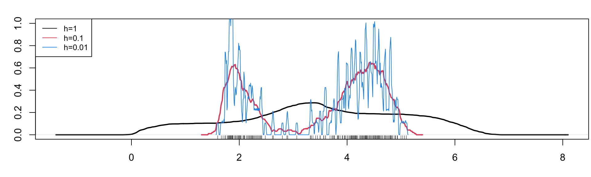
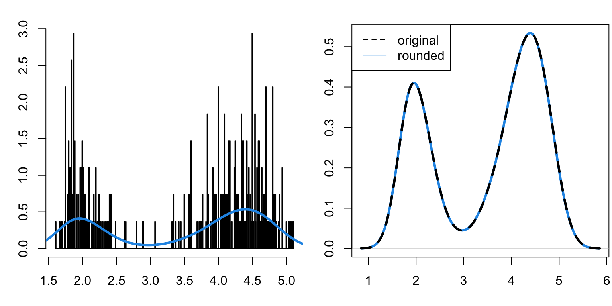

Code
data(faithful)
par(mfrow=c(1,2))
hist(faithful$eruptions, probability=T, main = "Eruption duration", xlab="time [min]")
hist(faithful$waiting, probability=T, main = "Waiting time", xlab="time [min]")Let \(X_1,\ldots,X_n\) be a random sample from a density \(f(x)\). Our goal is to estimate the density \(f\) non-parametrically (as flexibly as possible). We have already used a histogram to give us some intuition on an underlying distribution of a variable in a data set.
We will be using the faithful data which provides the time between eruptions (variable waiting) and the duration time of the eruptions (variable eruptions) for the Old Faithful geyser in Yellowstone. By specifying probability=T, we scaled the y-axis so each histogram integrates to one (it is easy to see why this is not the default – the numbers do not tell us much, but here we want to look at histograms as density estimators).
data(faithful)
par(mfrow=c(1,2))
hist(faithful$eruptions, probability=T, main = "Eruption duration", xlab="time [min]")
hist(faithful$waiting, probability=T, main = "Waiting time", xlab="time [min]")We assume that there exist underlying densities from which the eruption duration and waiting times are drawn. While histograms are useful in providing some quick information (supports, bimodality, etc.) they are quite useless in capturing finer properties, such as the shape, since they heavily depend on the binwidth as well as the origin – the two quantities that determine equally-spaced breaks for the bins.
par(mfrow=c(1,4), mar = c(3.2, 3, 1.6, 0.2)) # reduce the white space around individual plots
hist(faithful$eruptions, probability=T, main="Origin at 1.5");
hist(faithful$eruptions, breaks=seq(1.4,5.4,by=0.5), probability=T, main="Origin at 1.4", xlab="time [min]")
hist(faithful$eruptions, breaks=seq(1.3,5.3,by=0.5), probability=T, main="Origin at 1.3", xlab="time [min]")
hist(faithful$eruptions, breaks=seq(1.2,5.2,by=0.5), probability=T, main="Origin at 1.2", xlab="time [min]")par(mfrow=c(1,4), mar = c(3.2, 3, 1.6, 0.2))
hist(faithful$eruptions, probability=T, main="Binwidth=0.5")
hist(faithful$eruptions, breaks=seq(1.5,5.5,by=0.25), probability=T, main="Binwidth=0.25")
hist(faithful$eruptions, breaks=seq(1.5,5.5,by=0.1), probability=T, main="Binwidth=0.1")
hist(faithful$eruptions, breaks=seq(1.5,5.5,by=0.01), probability=T, main="Binwidth=0.01")
While binwidth is a reasonable tuning parameter (it’s role is quite intuitive and the histogram for different binwidths provides the same qualitative information), the choice of origin is completely arbitrary, and can significantly distort the histogram.
Recall that the density \(f\) is the derivative of the distribution function \(F\), and hence \[ f(x) = \lim_{h \to 0_+} \frac{F(x+h) - F(x-h)}{2h} \] The most natural estimator for \(F\) is the empirical distribution function \(\widehat{F}_n\), i.e., \(\widehat{F}_n(x) = \frac{1}{n} \sum_{i=1}^n \mathbb{1}_{[X_i \leq x]}\). If we fix the bandwidth \(h = h_n\) (at something “small” and depending on \(n\), we need \(h_n \to 0_+\) for \(n \to \infty\) in order to have any hope for consistency) and plug in the EDF to the previous equation, we obtain a density estimator \[ \widehat{f}(x) = \frac{\widehat{F}_n(x+h_n) - \widehat{F}_n(x-h_n)}{2h_n}. \]
So let’s take a look at consistency: \[ \mathbb{E} \widehat{f}(x) = \frac{F(x+h_n) - F(x-h_n)}{2h_n} \to f(x) \quad\text{if}\quad h_n \to 0_+ \] and since we can write \(\widehat{f}(x) = \frac{1}{2 n h_n} \sum_{i=1}^n \mathbb{1}_{\big[X_i \in (x-h_n, x+h_n]\big]}\), where \(\mathbb{1}_{\big[X_i \in (x-h_n, x+h_n]\big]} \sim Ber\big(F(x+h_n) - F(x-h_n)\big)\) \[ \begin{split} \mathrm{var}\left(\widehat{f}(x)\right) &= \frac{1}{4 n h_n^2} \big[F(x+h_n) - F(x-h_n)\big]\big[1 - F(x+h_n) + F(x-h_n)\big] \\ &= \frac{F(x+h_n) - F(x-h_n)}{2 h_n} \frac{1 - F(x+h_n) + F(x-h_n)}{2 n h_n} \to 0 \quad\text{if}\quad h_n \to 0 \;\wedge \; n h_n \to \infty \end{split} \] Hence we have pointwise (for every continuity point \(x\)) consistency if \(h_n \to 0\) and \(n h_n \to \infty\), as \(n \to \infty\).
There are two other observations to be made about the naive estimator above:
In the previous section, we developed an estimator of the density \(f\) by considering a (limiting) relationship between \(f\) and \(F\), into which we plugged in the empirical estimator of \(F\), ending up with an estimator of \(f\), based on the density of the uniform distribution.
The uniform density in the estimator \(\widehat{f}(x) = \frac{1}{n h_n} \sum_{i=1}^n K\left(\frac{X_i - x}{h_n} \right)\) can be replaced by some kernel \(K(\cdot)\). As long as the kernel satisfies the following assumptions:
and \(h_n \to 0\) and \(n h_n \to \infty\), we can show consistency and asymptotic normality for any fixed \(x\) (in which \(f\) is continuous, and moreover non-zero for asymptotic normality), though not as easily done as above for the uniform density kernel.
Note: Consistency is shown below in Section 3. Showing uniform consistency, i.e., that \(\sup_{x}|\widehat{f}(x) - f(x)| \to 0\), is also possible, but much harder.
Assumptions 1-3 above hold for any density of a symmetric distribution. Assumption 4 holds if the support is compact or if the corresponding random variable has a finite absolute moment. Assumption 5 is uniform boundedness of the kernel. These assumptions are satisfied by many densities. The most commonly used ones are:
| Kernel Name | Formula |
|---|---|
| Epanechnikov | \(K(x) \propto (1-x^2) \mathbb{1}_{[|x| \leq 1]}\) |
| Tricube | \(K(x) \propto (1- |x|^3)^3 \mathbb{1}_{[|x| \leq 1]}\) |
| Gaussian | \(K(x) \propto \exp(-x^2/2)\) |
plus some others just shown below
While the Gaussian kernel looks more spread visually, this does not matter since the spread is controlled by the bandwidth. What makes the Gaussian kernel different from the others is:
In practice, a thresholded Gaussian is most commonly used, followed by Epanechnikov, for which there exist some subtle optimality arguments.
As shown below, while there is some improvement when not using the naive rectangular kernel (i.e. uniform distribution density), choosing appropriate bandwidth \(h\) is much more important in practice than choosing the kernel \(K(\cdot)\).
# again, this is only a handle, not a proper function!
plot_kdes <- function(bw){
plot(density(faithful$eruptions, kernel="gaussian", bw=bw),
main=paste("Bandwidth = ",bw,sep=""), xlab="time [min]", ylim=c(0,max(c(density(faithful$eruptions, kernel="gaussian", bw=bw)$y,
density(faithful$eruptions, kernel="epanechnikov", bw=bw)$y,
density(faithful$eruptions, kernel="rectangular", bw=bw)$y))))
lines(density(faithful$eruptions, kernel="epanechnikov", bw=bw), col=4)
lines(density(faithful$eruptions, kernel="rectangular", bw=bw), col=2)
legend("topleft", col=c(1, 4, 2), lty=1, legend=c("Gauss", "Epan", "rect"), cex=0.8)
}
par(mfrow=c(1,4), mar = c(3.2, 3, 1.6, 0.2))
plot_kdes(1); plot_kdes(0.5); plot_kdes(0.25); plot_kdes(0.1)The bandwidth should be thought of as a tuning parameter, and in practice it needs to be chosen somehow.
It should be clear that a small bandwidth \(h\) leads to a wiggly estimator \(\widehat{f}(x)\) while a large bandwidth \(h\) leads to a smooth estimator:
par(mfrow=c(1,1), mar = c(3.2, 3, 1.6, 0.2))
plot(density(faithful$eruptions, kernel="rectangular", bw=1), main=" ", xlab="", ylim=c(0,1),lwd=2)
points(density(faithful$eruptions, kernel="rectangular", bw=0.1), col=2, xlab="", type="l",lwd=2)
points(density(faithful$eruptions, kernel="rectangular", bw=0.01), col=4, xlab="", type="l")
rug(jitter(faithful$eruptions))
legend("topleft", legend = c("h=1","h=0.1","h=0.01"),lty=1,col=c(1,2,4), cex=0.8)
This is actually the bias-variance decomposition in practice. We look for a sweet spot, which minimizes the mean squared error (MSE) of \(\widehat{f}\) at \(x\): \[\underbrace{\mathbb{E} \big[ \widehat{f}(x) - f(x) \big]^2}_{MSE} = \mathbb{E} \big[ \widehat{f}(x) \pm \mathbb{E} \widehat{f}(x) - f(x) \big]^2 = \underbrace{\big[\mathbb{E} \widehat{f}(x) - f(x) \big]^2}_{bias^2} + \underbrace{\mathrm{var}\big( \widehat{f}(x) \big)}_{variance}\] Let us calculate the bias and the variance (note that they are both pointwise, i.e., depending on \(x\), just as the MSE). For the bias: \[ \mathbb{E} \widehat{f}(x) = \mathbb{E} \frac{1}{n h} \sum_{i=1}^n K\left(\frac{X_i - x}{h} \right) = \frac{1}{h} \int K\left(\frac{y - x}{h} \right) f(y) d y \] and substituting \(z=(y-x)/h\), we have \[bias = \frac{1}{h} \int K\left(\frac{y - x}{h} \right) f(y) d y - f(x) = \int K(z) \big[ f(x+hz) - f(x) \big] dz\] We already know that we have hopes for consistency only with \(h=h_n \to 0\) and \(n h_n \to \infty\), so let us invoke Taylor expansion of \(f(x+hz)\) at \(x\): \[f(x+hz) = f(x) + h z f'(x) + \frac{1}{2}h^2z^2f''(x) + \ldots\] leading for \(h \to 0\) to \[ bias = h f'(x) \underbrace{\int z K(z) dz}_{=0} + \frac{1}{2} h^2 f''(x) \int z^2 K(z) dz + \mathcal{o}(h^2) \]
For the variance: denoting \(\star = K\left(\frac{y - x}{h} \right)\) \[ \begin{align*} \mathrm{var}\big\lbrace \widehat{f}(x) \big\rbrace &= \frac{1}{nh^2} \mathrm{var}\left(\star\right) = \frac{1}{nh^2} \mathbb{E} \star^2 - \frac{1}{nh^2} \big(\mathbb{E} \star \big)^2 \\ &= \frac{1}{nh^2} \int \left\lbrace K\left(\frac{y - x}{h} \right) \right\rbrace^2 f(y) dy - \frac{1}{nh^2} \left\lbrace \int K\left(\frac{y - x}{h} \right) f(y) dy \right\rbrace^2 \end{align*}\] and hence for \(h=h_n \to 0\) and \(n h_n \to \infty\) we have (using the same substitution and Taylor expansion as above) \[ \begin{split} \mathrm{var}\big\lbrace \widehat{f}(x) \big\rbrace &= \frac{1}{nh} \underbrace{\frac{1}{h} \int \left\lbrace K\left(\frac{y - x}{h} \right) \right\rbrace^2 f(y) dy}_{\int f(x+hz) [K(z)]^2 dz} - \underbrace{\frac{1}{n}\big\lbrace f(x) + bias(x) \big\rbrace^2}_{\mathcal{O}(n^{-1}) = \mathcal{o}(n^{-1} h^{-1})} \\ &= \frac{1}{nh} f(x) \int \big\lbrace K(z)\big\rbrace^2 dz + \mathcal{o}\left( \frac{1}{nh} \right) \end{split} \]
The calculations above lead to the asymptotically optimal choice of bandwidth (ignore the o-terms, take the derivative of the MSE w.r.t. \(h\) and set it to zero): \[h_{opt}(x) = n^{-1/5} \left(\frac{f(x) \int K(z)^2 dz}{\big[ f''(x) \big]^2 \big[\int z^2 K(z) dz \big]^2}\right)^{1/5}\]
About this formula, notice that:
In practice, cross-validation (CV) is the method of choice for bandwidth selection. CV will be the topic of one of the future lectures, and we will return to bandwidth selection for KDE then.
What if our sample was multivariate instead, denoted \(X_1,\ldots,X_n \in \mathbb{R}^d\)? In the simplest form, kernel density estimator can be defined naturally as \[ \widehat{f}(\mathbf{x}) = \frac{1}{n h^d} \sum_{i=1}^n K\left( \frac{X_{i,1} - x_1}{h} \right) \cdot \ldots \cdot K\left( \frac{X_{i,d} - x_d}{h} \right)\] In some cases, we might wish for
but the above formula is the simplest generalization of KDE to multiple dimensions. Interestingly, if we do require a separable kernel, the only radially symmetric option is the Gaussian kernel (because of such nice properties, the Gaussian kernel is often the default choice).
It is possible to show that the optimal rate for MSE of KDE in \(d\) dimensions is \(\mathcal{O}(n^{-4/(4+d)})\), so we loose convergence speed fast with increasing dimensions. To appreciate this, we visualize the rate for several values of \(d\):
Notice the gray horizontal line showing that, in terms of this asymptotic rate, \(n\approx 300\) with \(d=1\) leads to approximately the same error as \(n=30000\) with \(d=5\). This is a manifestation of the infamous curse of dimensionality. For this reason, KDE is usually restricted to dimensions \(d=1\) or \(d=2\) (beyond these, one usually assumes independence between the dimensions, estimates marginals separately using the ideas here, and then stitch the dimensions together using copulas for example).
Say we have \(n\) observations (\(X_1,\ldots,X_n)\) and \(m\) points on which we want to evaluate the estimator (\(x_1,\ldots,x_m\)). For a fixed bandwidth \(h\), calculating the estimator \[ \widehat{f}(x_j) = \frac{1}{n h} \sum_{i=1}^n K\left( \frac{X_i - x_j}{h} \right)\] for every \(j=1,\ldots,m\), i.e. for all the evaluation points, takes \(\mathcal{O}(mn)\) operations. Say that \(m\) and \(n\) are comparable, then the complexity is quadratic: \(\mathcal{O}(n^2)\). While this may not seem bad (for comparison, solving a system of \(n\) equations \(\mathbf{A} \mathbf{x} = \mathbf{b}\) without any special structure on the left-hand matrix \(\mathbf{A}\) takes \(\mathcal{O}(n^3)\) operations), it may get bad pretty fast in higher dimensions (everything naturally translates there). Here we discuss how to reduce the quadratic complexity to log-linear one, i.e. how to calculate the estimator in \(\mathcal{O}(n \log n)\) operations.
In this sub-section only, we will index \(p\)-dimensional vectors from \(0\) to \(p-1\) and similarly for matrices. I will write it down explicitly as a reminder from time to time.
Definition: A matrix \(\mathbf{C} = (c_{jk})_{j,k=0}^{p-1} \in \mathbb{R}^{p \times p}\) is called circulant if \(c_{jk} = c_{|j-k|}\), where \(\mathbf{c} = (c_j) \in \mathbb{R}^{p}\) is the symbol of \(\mathbf{C}\) (the first column of \(\mathbf{C}\)).
\[C=\left[\begin{array}{ccccc}c_0 & c_{n-1} & \cdots & c_2 & c_1 \\ c_1 & c_0 & c_{n-1} & & c_2 \\ \vdots & c_1 & c_0 & \ddots & \vdots \\ c_{n-2} & & \ddots & \ddots & c_{n-1} \\ c_{n-1} & c_{n-2} & \cdots & c_1 & c_0\end{array}\right]\]
Definition: The discrete Fourier basis in \(\mathbf{R}^p\) is (in the columns of) the matrix \(\mathbf{E} = (e_{jk})_{j,k=0}^{p-1} \in \mathbb{R}^{p \times p}\) with entries given by \[ e_{jk} = \frac{1}{\sqrt{p}} e^{2\pi i j k / p} , \qquad j,k=0,\ldots,p-1\] It is straightforward to check that \(\mathbf{E}\) is unitary and hence the discrete Fourier basis is really a basis.
Definition: The discrete Fourier transform (DFT) of \(\mathbf{x} \in \mathbb{R}^p\) is \(\mathbf{E}^* \mathbf{x}\) with \(\mathbf{E}\) being the discrete Fourier basis from the previous definition.
In the previous definition, the superscript \(*\) denotes the conjugate transpose. Since \(\mathbf{E}\) is symmetric, it only corresponds to adding minuses to all the complex exponents. The inverse DFT (IDFT) is just the application \(\mathbf{E} \mathbf{x}\) (without the complex conjugate).
A fast Fourier transform (FFT) is an algorithm for evaluating the DFT \(\mathbf{E}^* \mathbf{x}\) efficiently. While the naive matrix-vector multiplication would require \(\mathcal{O}(p^2)\) operations, this can be reduced to \(\mathcal{O}(p \log p)\) by utilizing the special (cyclic) structure of \(\mathbf{E}\). Any specific algorithm achieving this reduction is referred to as a FTT.
The FFT is indispensable (mainly in the engineering areas), and is widely considered to be one of the most important algorithms out there. While the FFT idea goes back to Gauss and has little to do with statistics, the FFT is attributed to the great statistician John W. Tukey.
The important connection between circulant matrices is in the following claim.
Claim: Circulant matrices are diagonalizable by the DFT. Specifically, the eigendecomposition of a circulant matrix \(\mathbf{C}\) (with a symbol \(\mathbf{c}\)) is given by \(\mathbf{C} = \mathbf{E} \mathrm{diag}(\mathbf{q}) \mathbf{E}^*\), where \(\mathbf{q} = \mathbf{E}^* \mathbf{c}\).
Proof: As usual, let \(\mathbf{e}_j\) denote the \(j\)-th column of \(\mathbf{E}\). Then we have \[ \mathbf{C} \mathbf{e}_j = \begin{pmatrix} \sum_{k=0}^{p-1} c_{0k} e_{jk} \\ \sum_{k=0}^{p-1} c_{1k} e_{jk} \\ \vdots \\ \sum_{k=0}^{p-1} c_{(p-1),k} e_{jk} \end{pmatrix} = \frac{1}{\sqrt{p}}\begin{pmatrix} \sum_{k} c_{|0-k|} e_{jk} \\ \sum_{k} c_{|1-k|} e_{jk} \\ \vdots \\ \sum_{k} c_{|(p-1)-k|} e_{jk} \end{pmatrix} = \frac{1}{\sqrt{p}}\begin{pmatrix} e^{2 \pi i j/p} \sum_k c_{|0-k|} e^{2 \pi i j (k-0)/p} \\ e^{2 \pi i j 2/p} \sum_k c_{|1-k|} e^{2 \pi i j (k-1)/p} \\ \vdots \\ e^{2 \pi i j p/p} \sum_k c_{|(p-1)-k|} e^{2 \pi i j (k-p+1)/p} \end{pmatrix} \] Since both the symbol \(\mathbf{c}\) and the Fourier basis are cyclic, all the sums on the RHS of the previous formula are the same, let us denote them by \(\widetilde{q}_j\). Then we have \(\mathbf{C} \mathbf{e}_j = \frac{1}{\sqrt{p}} \widetilde{q}_j \mathbf{e}_j\) for all \(j\). Equivalently, in the full matrix format: \[ \mathbf{C} \mathbf{E} = \mathbf{E} \frac{1}{\sqrt{p}} \mathrm{diag}\big(\widetilde{q}\big) \] and hence we have the eigendecomposition \(\mathbf{C} = \mathbf{E} \frac{1}{\sqrt{p}} \mathrm{diag}\big(\widetilde{q}\big) \mathbf{E}^*\). Defining \(\mathbf{q} := \frac{1}{\sqrt{p}} \widetilde{q}\), this is exactly what we wanted. It remains to show that \(\mathbf{q} = \mathbf{E}^* \mathbf{c}\), but this is clear since: \[ \mathbf{q} = \frac{1}{\sqrt{p}}\begin{pmatrix} \sum_k c_{|0-k|} e^{2 \pi i j (k-0)/p} \\ \sum_k c_{|1-k|} e^{2 \pi i j (k-1)/p} \\ \vdots \\ \sum_k c_{|(p-1)-k|} e^{2 \pi i j (k-p+1)/p} \end{pmatrix} = \begin{pmatrix} \sum_k c_{|0-k|} e^{- 2 \pi i j (0-k)/p} \\ \sum_k c_{|1-k|} e^{- 2 \pi i j (1-k)/p} \\ \vdots \\ \sum_k c_{|(p-1)-k|} e^{- 2 \pi i j (p-1+k)/p} \end{pmatrix} = \begin{pmatrix} \sum_k c_{k} e^{- 2 \pi i j k/p} \\ \sum_k c_{k} e^{- 2 \pi i j k/p} \\ \vdots \\ \sum_k c_{k} e^{- 2 \pi i j k/p} \end{pmatrix} = \mathbf{E}^* \mathbf{c} \]
Now we know that every circulant matrix can be applied efficiently thanks to the FFT: \[\mathbf{C} \mathbf{x} = \underbrace{\mathbf{E} \underbrace{\mathrm{diag}(\mathbf{\underbrace{\mathbf q}_{= \mathrm{FFT}(\mathbf{c})}}) \underbrace{\mathbf{E}^* \mathbf x}_{ = \mathrm{FFT}(\mathbf x)}}_{\text{entry-wise prod of those 2 vectors}}}_{\text{inverse FFT of that product}}\] Hence instead of the \(\mathcal{O}(p^2)\) operations needed to calculate \(\mathbf{C} \mathbf{x}\) naively, we can calculate it using FFT (twice FFT and once inverse FFT) in just \(\mathcal{O}(p \log(p))\) operations.
Why are circulant matrices and FFT interesting to us here? Instead of calculating \(\widehat{f}(x)\) by the formula above, i.e., by applying a smoother directly to data \(X_1,\ldots,X_n\), let’s create a histogram first (with a small binwidth) and then smooth the histogram instead of the original values. This is equivalent to rounding the observations \(X_1,\ldots,X_n\) to a common grid \(t_1,\ldots, t_p \in \mathbb{R}\), obtaining approximate values \(\widetilde{X}_1,\ldots,\widetilde{X}_n\), and it will allow us to use FFT to reduce the KDE complexity from \(\mathcal{O}(n^2)\) to \(\mathcal{O}(n \log n)\). It could actually be even less if we used a larger binwidth for the initial histogram (i.e., rounded to a coarser grid), but that is not what we want.
Let us denote the vector of counts in the initial histogram by \(\mathbf{y} \in \mathbb{R}^p\), where \(p\) is the grid size (the number of bins of the initial histogram). For simplicity, we will assume \(p=n\). It is easy to see that applying KDE to the rounded data \(\widetilde{X}_1,\ldots,\widetilde{X}_n\) is equivalent to calculating a linear smoother of the initial histogram: \[ \widehat{f}(x) = \frac{1}{n h_n} \sum_{i=1}^n K\left(\frac{\widetilde{X}_i - x}{h_n} \right) = \frac{1}{n h_n} \sum_{j=1}^p K\left(\frac{t_j - x}{h_n} \right) y_j \]
par(mfrow=c(1,2), mar = c(3.2, 3, 1.6, 0.2))
init_hist <- hist(faithful$eruptions, breaks = 256, plot=F)
x_tilde <- rep(init_hist$mids, times=init_hist$counts) # read \tilde{X} from the initial histogram
hist(faithful$eruptions, breaks = 256, freq=F, plot=T,xlab="",main="") # plot init hist on the density scale
points(density(x_tilde,bw=0.25),col=4,type="l",lwd=3)
# compare with the default KDE
plot(density(x_tilde,bw=0.25),col=4,lwd=3,xlab="",main="")
points(density(faithful$eruptions,bw=0.25),type="l",main="KDE",lwd=3,lty=2)
legend("topleft",legend=c("original","rounded"),lty=c(2,1),col=c(1,4))
And as we can see from the right-hand plot above, calculating KDE using the rounded data \(\widetilde{X}_1,\ldots,\widetilde{X}_n\) is very similar to calculating it using the original data \(X_1,\ldots,X_n\).
However, the rounding essentially enables us to utilize the algebra above. Say we only want to evaluate \(\widehat{f}(x)\) on a grid – for simplicity let us say the same grid, given by \(t_1, \ldots, t_p\) – we can write the whole resulting vector as \[ \big(\widehat{f}(t_1),\ldots,\widehat{f}(t_p)\big)^\top = \mathbf{S} y \] where the entries of \(\mathbf{S}\) are given by \(s_{ij} = \frac{1}{n h_n} K\left(\frac{t_j - t_i}{h_n} \right)\).
Methods that calculate the output as a matrix transformation of the input (like in the previous formula or in linear regression) are called linear smoothers, and their simplicity leads to nice properties. This will be seen in the next section as well as later in the course. For example, questions such as “how would the fit look like if we dropped a single observations” (which is needed e.g. in linear regression for calculating the Cook’s distances) can be answered without refitting for linear smoothers. Adopting linear models terminology, \(\mathbf{S}\) is called the hat matrix.
You can notice that KDE is a linear smoother even without rounding the observations on a grid (simply take \(\mathbf{y} \equiv \mathbf{1}\)), but only on an equidistant grid is the hat matrix \(\mathbf{S}\) Toeplitz (in this case, it is symmetric, see below).
The kernel on the left-hand plot above just shifts (from left to right, visualized in the middle) and its values form the hat matrix on the right-hand side (from bottom to top).
Any Toeplitz matrix \(\mathbf{S}\) of dimensions \(n \times n\) can be embedded into a circulant matrix \(\mathbf{C}\) of dimensions at most \((2n -1) \times (2n-1)\). The easiest way is to wrap the first row of \(\mathbf{S}\), denoted \(\mathbf{s}\), to form the first row of \(\mathbf{C}\) as \[ \mathbf{c} = (s_1, s_2, \ldots, s_{n-1}, s_n, s_{n-1},\ldots,s_2)^\top \]
Then, when we want to apply the Toeplitz matrix \(\mathbf{S}\), i.e., calculate the KDE from the initial histogram as \(\mathbf{S} y\), we can instead apply the wrapped circulant matrix \(\mathbf{C}\) on a vector suitably extended with zeros: \[ \mathbf{C} \begin{pmatrix} \mathbf{y} \\ \mathbf 0 \end{pmatrix} = \left( \begin{array}{c|c} \mathbf{S} & \cdot \\ \hline \cdot & \cdot \end{array}\right) \left( \begin{array}{c} \mathbf{y} \\ \hline \mathbf 0 \end{array}\right) = \left( \begin{array}{c} \mathbf S \mathbf{y} \\ \hline \cdot \end{array}\right) \] Since this section is a bit longer and we might have lost the thread, let’s summarize what we have done to make KDE calculations efficient:
While I have been using solely the function density() from the base R distributions, there are in fact dozens of packages in R performing univariate kernel density estimation. An overview is given in Wickham (2011), including a simulation study concerning the speed and accuracy of some of the available packages. The takeaway message is clear: one should be aware of what software they use. To this point, the density() function uses an FFT algorithm as described above and, while still not being the fastest, it is a well documented and reliable option.
Secondly, now that we understand that KDE (which is really the standard for density estimation) is basically just a histogram smoother, it is clear why “densigrams” (histograms overlaid with KDEs) are so popular for visualization purposes (like the first plot in Section 5.2 above).
I would like to conclude with another reason, why understanding KDEs as linear smoothers is useful, again through the connection with linear regression. In linear models, the (regression, as opposed to residual) degrees of freedom is the dimensionality in which the model (for the mean) is free to vary. If there is no linear dependence between the predictors, then this is simply the number of predictors \(p\). If, on the other hand, there is linear dependence, we can still define the degrees of freedom as \(\mathrm{df} := \mathrm{tr}(\mathbf{H})\), where \(\mathrm{tr}(\cdot)\) denotes the trace of the matrix (the sum of the diagonal elements), \(\mathbf{H} = \mathbf{X} (\mathbf{X}^\top \mathbf{X})^\dagger \mathbf{X}^\top\) is the hat matrix (and the \(\dagger\) superscript denotes the pseudo-inverse). The degrees of freedom defined via the hat matrix still correspond to the model dimension. In KDE (or other non-parametric approaches), the model dimension in infinite. But for all linear smoothers (including KDE) it still makes sense to consider the trace of the hat-matrix as the degrees of freedom in our model: \[ \mathrm{df} := \mathrm{tr}(\mathbf{S}) \] We can still vaguely think of this \(\mathrm{df}\) as the model dimensionality.
For the global bandwidth choice, the hat matrix \(\mathbf{S}\) is constant on the diagonal, equal to \(\frac{1}{n h}K(0)\). Hence we simply have \(\mathrm{df} = K(0)/h\), and so the degrees of freedom are inversely proportional to the bandwidth \(h\), also depending on the kernel \(K(\cdot)\).
It is important to note that counting degrees of freedom is merely a concept, which often appears in calculations, that can be helpful for comparison purposes, but should not be subject to overinterpretation. For example, looking at the Old Faithful eruptions and some of their smooths above, we might think of fitting a mixture of two Gaussians \[f(x) = \tau \varphi_{\mu_1,\sigma_1^2}(x) + (1-\tau)\varphi_{\mu_2,\sigma_2^2}(x)\] to the data. This mixture has 5 parameters (two means, two variances, and the mixing proportion), so it has 5 degrees of freedom. Below, we visualize the KDE of the eruptions with bandwidth chosen such that the resulting estimator has also 5 degrees of freedom. We can vaguely think of this smooth as having the same level of complexity as the Gaussian mixture model above (which we will learn to fit later in the semester, but already now we can imagine how the fit would look like – less wiggly).
my_bw <- 0.07977
my_df <- dnorm(0,0,1)/my_bw
plot(density(faithful$eruptions,bw=my_bw),main=paste("bw =",my_bw," & ","df =",round(my_df,5)),xlab="")